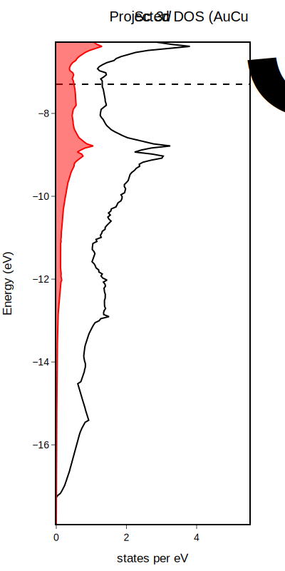

Prepare files and use PlotDFT
We'll walk through the PDOS_ScAl3 example.
To plot DOS data, we need to read information from three VASP files:
OUTCAR- the Fermi energyPOSCAR- crystallographic geometryDOSCAR- the DOS distributions
Copy these files from the examples into a working directory. Open the Julia REPL in your working directory and load PlotDFT.jl
julia> using PlotDFT
It is recommended to write these commands in a .jl file, so that commands to generate your plot are saved and can be rerun. See the example PDOS_ScAl3.jl.
Importing data from files
Now we must extract the relevant data from our VASP files. To do this, we use import_DOS_VASP.
dos = import_DOS_VASP()By default, it will check the current directory for the three files. If your files are in another directory, you can specify the directory as an argument.
dos = import_DOS_VASP("/path/to/files")The relevant information is stored into our dos variable, which is a PlotDFT.DOSinfo struct. You can see information about our system.
PlotDFT.DOSinfo: Al₃Sc
Atom type 1: Sc
Atom type 2: Al
Projected DOS is l-decomposed: (1) s, (2) p, (3) d
Fermi energy: 7.2264, α+β: -14.522Here, we see the chemical formula of the system, the order of the atoms as listed in the POSCAR, information about the projected DOS (if included), and the Fermi energy.
Plotting the total density of states
We now can use plot_DOS to generate a total DOS distribution and store the plot object in the variable p1.
p1 = plot_DOS(dos)By default, the energies will be plotted relative to the Fermi energy (E-E<sub>F</sub>), ranging from the minimum DOS energy to 1 eV + the Fermi energy. The x-axis will range from 0 to 1.1 * the maximum states per eV. These can be modified with arguments to the function.
p1_abs = plot_DOS(dos, emin = -17, emax = -7, xmax = 4, eaxis = "absolute")Now, I've specified our energy axis to be plotted in absolute units (as opposed to relative units), as well as modified the range of the energy and states axes.
Plotting the projected density of states
Let's plot the projected density of states corresponding to the Sc 3d bands. Again, we can look at dos to see what type of information is available.
PlotDFT.DOSinfo: Al₃Sc
Atom type 1: Sc
Atom type 2: Al
Projected DOS is l-decomposed: (1) s, (2) p, (3) d
Fermi energy: 7.2264, α+β: -14.522The relevant information corresponds to Sc, atom type 1. Our DOSCAR holds l-decomposed projected DOS information, and the d-bands correspond to the number 3. We can now use plot_pDOS with our total density of states plot.
p1 = PlotDFT.plot_pDOS(p1, dos, atom=1, pdos="d", color="#FF0000")Here, the required arguments are p1 and dos, corresponding to our total density of states plot and information about our system, respectively. Additionally, we need to specify what atom we use with atom=1 and which pdos to plot with pdos="d". The only optional argument here is the color. The default color is black; here, it is a string corresponding to the hexadecimal for red.
Adjusting plot formatting
We can adjust plot formatting by reaching into the PlotlyJS package's relayout! function. Below is an example of formatting you might consider.
PlotDFT.relayout!(
p2,
title_text = "DOS distribution of AuCu<sub>3</sub>-type ScAl<sub>3</sub>",
title_x = 0.5,
xaxis_title_text = "states per eV",
yaxis_title_text = "Energy (eV)",
showlegend = false
)The first argument must be the plot object (in this case, p2), while the rest are optional. In this example, a title is added and centered, as well as titles for the axes. In addition, the legend is turned off. See https://plotly.com/julia/reference/layout/ for a list of options!

Saving the figure
PlotlyJS can save figures in the following file formats:
- .html
- .json
- .png
- .svg
- .jpeg
- .webp
PlotDFT.savefig(p2, width=400, height=800, "ScAl3_Sc_d_pdos.svg")Oftentimes, PlotlyJS will not save your figure in the displayed dimensions, so it's recommended to specify the dimensions (in pixels) in the arguments. You can also optionally specify a scale (see documentation). The last argument is a string corresponding to the path, filename, and file format of the plot.
For the purpose of post-processing (with graphics-editing programs like Photoshop, Illustrator, or Affinity), it is recommended to export these figures as vector-based formats, such as SVG or PDF.
Beware that some programs cannot open or import SVG files, so PDF is generally more accessible.